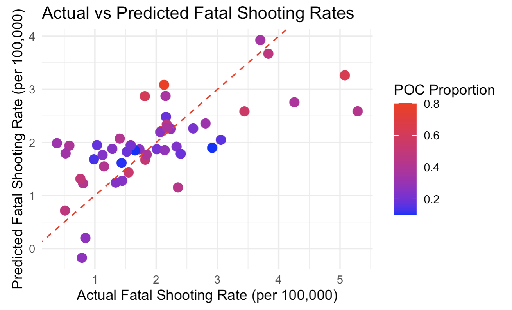
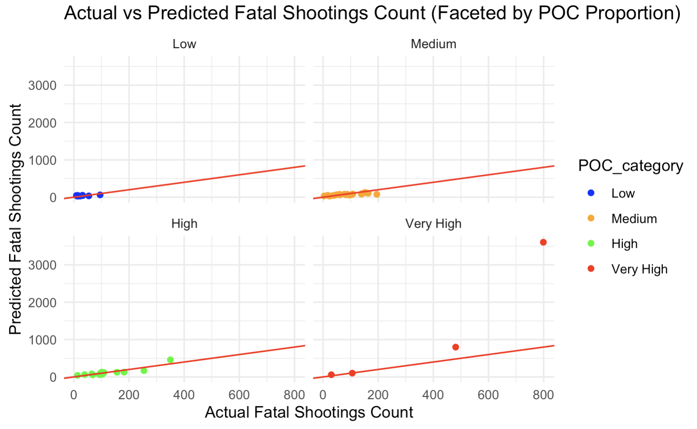
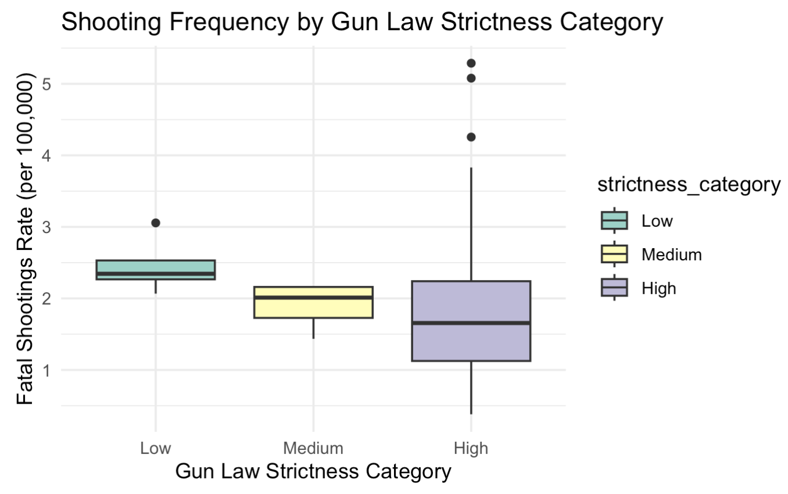
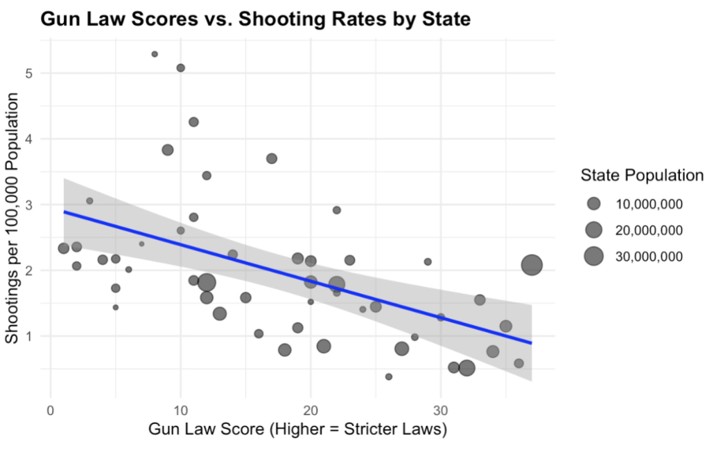

Analysis

In this analysis, we explore the complex relationship between shooting incidents and race, with particular emphasis on racial proportions in different areas and their correlation with shooting frequency. Additionally, we examine how state-level gun restrictions might influence shooting rates, leveraging a dataset that merges information on police shootings with data on firearm regulations.
The central questions guiding our analysis are: 1. Does mental health status impact fatalities? 2. Do areas with higher proportions of people of color see more shootings? 3. Do states with more firearm precautions and restrictions have lower frequencies of shootings?
Through rigorous statistical techniques, we aim to answer these questions by identifying patterns and relationships in the data using a series of figures and tables that clearly illustrate how racial demographics and firearm regulations interact with shooting incidents. This comprehensive analysis integrates both the police shooting data and the additional gun restriction dataset to provide a nuanced view of how race, shootings, and gun laws are interconnected.
The figures below highlight key insights and patterns related to these relationships, offering a deeper understanding of the factors influencing shooting frequencies and their demographic implications.
| ### Question 1: |
|---|
| ### Question 2: |
| Do areas with higher proportions of people of color see more shootings? |
|  The figure demonstrates a positive linear correlation between the proportion of people of color (POC) in a state and the fatal shooting rate (per 100,000 residents). Points with higher POC proportions, represented in red, consistently exhibit higher actual and predicted shooting rates. This pattern aligns with the question, reinforcing that states with larger populations of people of color experience disproportionately higher rates of fatal police shootings. |
|  |
| The scatter plots faceted by the proportion of people of color (POC) illustrate a noticeable trend between higher POC proportions and an increase in the frequency of fatal shootings. In areas with a low POC proportion, the points are concentrated within a range of (0, 0) to (100, 300), suggesting that these areas experience relatively fewer fatal shootings. Both actual and predicted counts of fatal shootings remain low in these regions. As the POC proportion increases to medium levels, the range expands slightly to (0, 0) to (200, 300), indicating a modest rise in shooting incidents. This suggests that areas with medium proportions of people of color tend to experience slightly more shootings than those with lower POC proportions. |
| In areas with a high POC proportion, the range extends from (0, 0) to (350, 500), showing a clear increase in both observed and predicted fatal shootings. This indicates that higher POC areas are associated with a higher frequency of shootings, with greater variability in the data. Finally, in regions with very high POC proportions, the range of shooting counts extends even further, from (0, 0) to (800, 3500), indicating some extreme outliers. This suggests that areas with the highest proportions of people of color are significantly more likely to experience fatal shootings, both in terms of observed data and model predictions. |
| These trends suggest that areas with higher proportions of people of color tend to see more fatal shootings. However, this relationship does not imply direct causality. Other factors, such as socioeconomic conditions, systemic inequalities, and community-policing dynamics, may also contribute to the higher shooting rates in these areas. Further analysis is needed to explore these factors in more depth and better understand the underlying causes of these disparities. |
Question 3:
Do states with more firearm precautions and restrictions have lower frequencies of shootings?
 The boxplot reveals an interesting relationship between gun law strictness and fatal shootings rates across three categories: low, medium, and high strictness. States with low gun law strictness have a median fatal shootings rate of approximately 2.4, with a smaller range, indicating less variability in shooting rates. In contrast, states with medium strictness have a slightly lower median rate of 2.0, but with a wider interquartile range, suggesting more variation in shooting rates within this category. For states with high gun law strictness, the median fatal shootings rate drops to around 1.6, the lowest of the three categories. However, the range of shooting rates in this category is the largest, pointing to greater variability. This suggests that while stricter gun laws may be associated with lower fatal shootings rates on average, their impact can vary significantly from state to state.

The graph illustrates the relationship between Gun Law Scores (where higher scores indicate stricter laws) and Shooting Rates (measured as shootings per 100,000 population) across various states. The downward-sloping regression line, accompanied by a shaded confidence interval, reveals a clear negative correlation: states with stricter gun laws tend to experience lower shooting rates. For example, states with Gun Law Scores above 30, such as those likely representing stricter gun control states like California or New York, tend to cluster around lower shooting rates, close to 1 or fewer per 100,000 people. In contrast, states with Gun Law Scores near or below 10, potentially states like Mississippi or Louisiana, often show significantly higher shooting rates, in some cases exceeding 4 or 5 per 100,000 people.
State population, represented by the size of the bubbles, does not seem to strongly influence the overall trend. Larger states, like Texas or Florida, appear distributed along the regression line, reinforcing the idea that the negative relationship between gun law strictness and shooting rates holds regardless of population size. Notably, states with weaker gun laws often experience higher shooting rates, such as the outliers seen in the lower Gun Law Score range, where shooting rates rise above the general trend. Conversely, states with stricter gun laws tend to cluster toward the lower end of shooting rates, demonstrating a consistent association between strong regulation and reduced shootings.
While this graph does not establish causation, it highlights a consistent and meaningful correlation between stricter gun legislation and reduced shooting rates. For instance, states that implement and enforce stricter gun control measures, such as background checks, firearm permits, or bans on certain weapons, may see fewer incidents of gun violence. This data suggests that stricter gun laws could play a role in mitigating shooting rates across states.
Takeaways:
In conclusion, our analysis reveals several important insights into the complex factors that influence police shooting incidents. First, while mental health status shows some correlation with shooting fatalities, it does not emerge as a clear, consistent predictor. The variability in shooting outcomes suggests that other factors, such as police practices, racial dynamics, and gun laws, may be more significant drivers. Second, areas with higher proportions of people of color tend to experience higher rates of fatal shootings, though it is important to note that this relationship is influenced by various other factors like socioeconomic conditions and systemic inequalities. Finally, stricter gun laws appear to be associated with lower rates of fatal shootings, suggesting that firearm regulations could play a role in reducing gun violence, although further research is needed to establish causality. Ultimately, this analysis underscores the need for a multi-faceted approach to addressing police shootings, considering not just race and gun laws, but also the broader social and systemic factors at play.